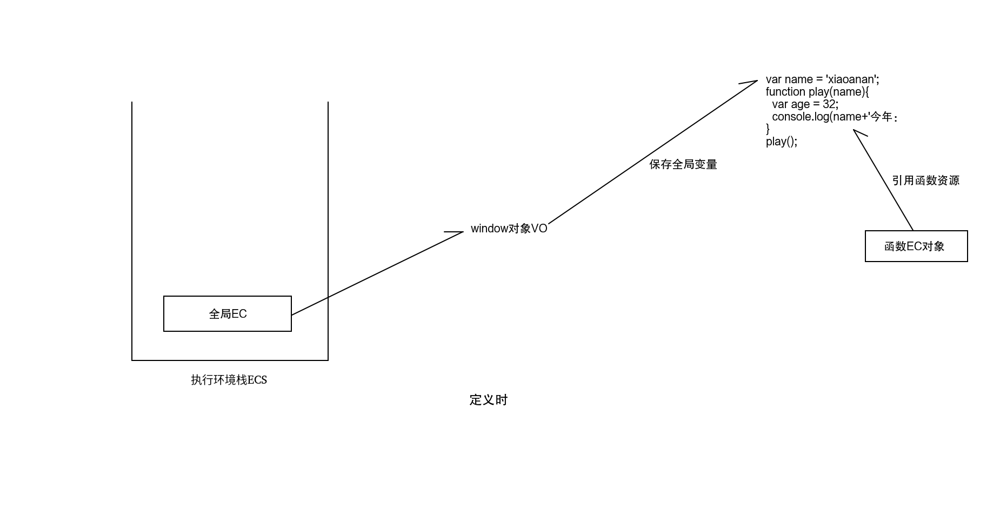
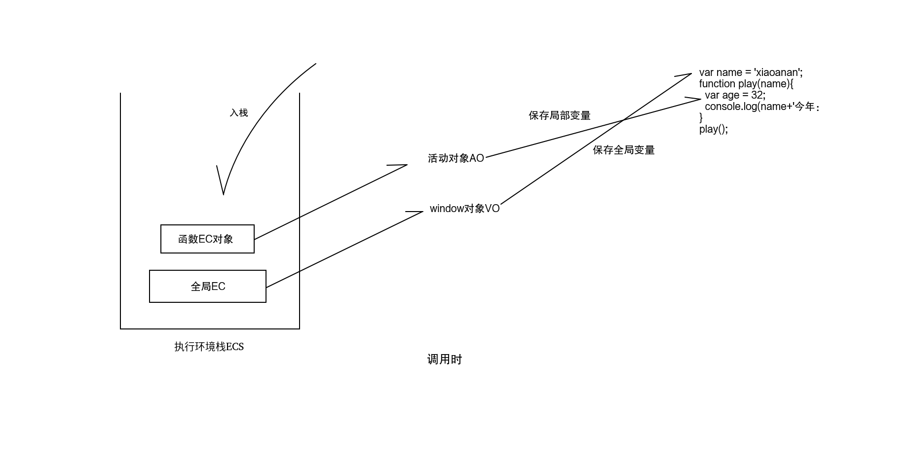
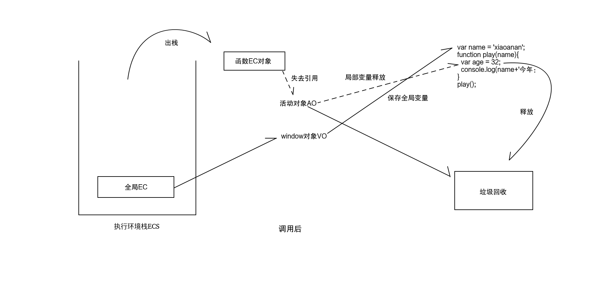
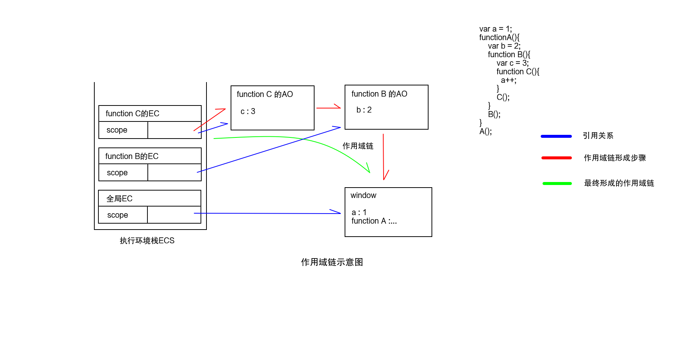

1.what：JavaScript一种直译式脚本语言，是一种动态类型、弱类型、基于原型的语言，内置支持类型。它的解释器被称为JavaScript引擎，为浏览器的一部分，广泛用于客户端的脚本语言(来源自百度百科)。通俗点，JavaScript，专门做前端开发的，解释型脚本语言。
2.how(如何分类)：JavaScript包含以下内容：
JavaScript
|
---------------------------
| |
ECMAScript BOM
| |
window对象
|
------------------------
| | | |
DOM history location event ...
3.ECMAScript:JavaScript的核心语法，称得上JavaScript中最难的一部分。
4.BOM：Browser Object Model,浏览器对象模型，封装一组操作浏览器的API
5.DOM：Document Object Model,文档对象模型，封装一组操作文档的API
6.文档：文档类型有很多，最常用的，txt文档，运行于浏览器之上的，HTML文档和XML文档。因文档类型不同，操作文档的API种类也不一样。
7.DOM分类：分为核心DOM和HTML DOM。
核心DOM：操作一切文档的API，只要是文档，都可以用的API！
HTML DOM：一组专门操作网页文档的API，专一性，只能操作HTML文档
1.what(定义，什么是)：内存中存储一个数据的存储空间，再起一个名字 2.when(何时使用)：程序中反复使用的数据，都要先保存在变量中，再参与运算 3.how(如何使用)：声明;赋值;取值 1.声明：在内存中创建一个新变量 2.如何声明： 语法：var 变量名; 注意： 仅声明，但暂未赋值，默认值为undefined 3.变量命名： 1.不能以数字开头，仅能包含字母，数字和下划线 2.不能用保留字：js中已经预先使用的关键字 比如：name X 3.匈牙利命名法：命名尽量见名知意 4.驼峰命名法：分为大驼峰和小驼峰 小驼峰：第一个单词首字母小写，之后每个单词首字母大写； 比如：backgroundColor，listStyleType 大驼峰：从第一个单词开始其首字母均大写 4.赋值：将等号右边的数据，保存到等号左边的变量中 5.如何赋值： 语法：变量名=值; 注意：对已经包含值的变量赋新值，新值会替换旧值 建议：在声明同时，初始化变量的值，即：var 变量名=值; 6.取值：只要使用变量名，在运行时，会被自动替换为变量中的值 7.特殊情况：3种： 1. 只声明，但未赋值的变量，可任意使用 比如：var hb; console.log(hb); //undefined 2. 从未声明的变量，不能使用(取值)！ 报错：ReferenceError: XXX is not defined 3. 未声明的变量，却可赋值！——其实和var不一样 强烈建议：必须用var声明变量 8.声明提前：在程序正式执行前，都会将var声明的变量提前到当前脚本块的顶部集中声明，赋值语句留在原地
请看如下代码： <script> var a = 1; console.log(a);//? console.log(b);//? var b = 2; console.log(b);//? </script> 三行输出语句输出的结果分别是： 1 undefined 2 分析： 因为声明提前，所有被var关键字声明的变量，其声明语句全部提前到当前作用域顶部集中声明，即如上代码可以修改成这样： var a; var b; a = 1; console.log(a); console.log(b); b = 2; console.log(b); 而js代码又是逐行解析，故解析到第一个console.log(b)时，程序发现此时b变量仅仅只声明了但是未赋值，所以给值undefind，而当b变量赋值之后，第二个console.log(b)发现此时b变量已经赋值为2，所以输出b变量的值。
1.what(定义)：数据在内存中的存储形式 2.why(为什么要有不同数据类型)：现实中，不同类型的数据，都有专门的用途,加以归类，方便存储。 3.how(数据如何分类)：JavaScript中，数据类型分为原始类型(值)和引用类型(对象) 4.原始类型：值直接保存在变量本地的类型（值为一个，而且不能特别复杂） 原始类型包含： Number String Boolean undefined null 5.引用类型：值没有直接保存在变量本地的类型，变量中只保存指向实际数据所在位置的地址值 引用类型包含： Array,function,object 6.Number： 1.定义：表示所有数字，即可表示整数，又可表示浮点数(小数) 2.何时使用：存在于表达式参与运算等情况。 3.舍入误差：计算机中也有无法精确计算的数字而导致的计算结果进度偏差。注意：此问题不可避免 4.舍入误差解决方式：按指定小数位数四舍五入即可。语法： n.toFixed(2)-->将计算结果按2位小数四舍五入 7.String： 1.定义：字符串，表示所有文字信息 2.何时使用：凡是用作显示的信息都要加引号。注意：js的内存中都是用字符的unicode号存储字符 3.unicode：人为给主要语言中的每个字符编一个号 4.注意：字符串内容一旦创建，值不可改变，非要改变，只能用新字符串替换旧字符串。 5.特殊情况：+运算中，如果参与运算的都是字符串，则加法变为字符串拼接 8.Boolean： 1.定义：布尔类型数据，表示真或假，只有两个值，true和false,对应数值1和0 2.何时使用：比较运算，逻辑运算，各种条件循环语句的判断等等 9.null： 1.定义：空值，没有值，值为空。 2.何时使用：一般用作变量占位，即声明了一个变量但又不着急让其具有具体意义的值时，使用null进行占位。 10.undefind： 1.定义：变量声明但未赋值 2.何时使用： 1.一个变量声明但是未赋值 2.访问一个对象不存在的属性时
1.JavaScript弱类型的特点：
1.声明变量时，不用考虑变量中将要存储的数据类型
2.赋值时，动态判断数据的类型。因为是动态判断同一个变量，先后可保存不同类型的数据。
3.运算时，js会根据自己的需要，动态转换数据类型
2.数据类型转换方式：
1.隐式转换
1.what：无需程序员干预，而自动完成的转换
2.算数运算中的隐式转换:
规律：
1). 默认一切转数字类型，做算数计算
bool类型：true-->1 false-->0
2). +法中，只要有一个是字符串， 都转为字符串，+变为字符串拼接
3.其他类型转字符串的隐式转换: 在字面量前后直接加引号
(转字符串：true-->”true”)
4.NaN（Not a Number）：“不是一个数字”的“数字（类型：指的是数字类型）”
5.何时遇到：当无法转为数字时，或无法正常计算时，结果都为NaN。注意：和任何数据做计算，结果永远为NaN
6.加法计算中，碰上字符串，也会转为"NaN"
7.typeof(x): 返回x的数据类型名称: Number String Boolean undefined
2.强制转换：程序员主动调用专门函数完成的转换
1.任意 to String： 2种：
1)var str=x.toString();
2)var str=String(x);-->相当于隐式转换
对比String(x)和x.toString()：
String(x):万能
x.toString(): null和undefined转不了
原理：
function String(x){
if(x===undefined){
return “undefined”;
}else if(x==null){
return “null”;
}else{
return x.toString();
}
}
2.任意 to Number：3种：
注意：Number有自动去除空格的功能
1.任意 to Number：
var n=Number(x);-->隐式
2.String to Number：
1.to 整数：
var n=parseInt(str);默认情况下放字符串
何时使用：将*字符串*转为整数时使用。如果传入的不是字符串，则先隐式转为String
2.Number(x) vs parseInt(str):
1.Number只认识纯数字组成的字符串
2.Number却可转bool类型
3.parseInt(str)认识包含非数字字符的字符串开头位置的数字
4.parseInt转不了bool
3.String to 浮点数：
var n=parseFloat(str);
何时使用：只要将字符串转为小数时。用法和parseInt用法完全一样。
3.任意类型 to Boolean:
var bool=Boolean(x);
注意：
"" 0 NaN undefined null -->false
其余都是true
1.运算符：程序中模拟人的思维运算或判断的符号 2.表达式：由数据，变量和运算符组成的一个公式。任何表达式都有返回值。 3.算数运算符 1.分类：+ - * / % ++ -- 2.返回值：只能是number，如果运算无效，返回NaN 4.递增、递减运算符：++ --,也是赋值运算。 1.n++: n=n+1; 将n中的值+1，后再保存回n中 2.有2种情况都会将n中的值+1 1) ++n: 前++, 返回*新*值 2) n++: 后++, 返回*旧*值 前++，后++，变量值都会增加1，但是返回值不一样 5.比较运算符：> <>= <===!==== 1.作用：作比较，比大小等 2.返回值：true和false 3.===：全等，考察两个维度： 1) 类型首先必须相等 2) 值其次也相等 6.逻辑运算符：&& || ! 1.&&:读作且，英文读作and，表示逻辑与 2.||:读作或，英文读作or，表示逻辑或 3.!:读作非，英文读作not,表示逻辑非 4.短路逻辑：逻辑运算中，如果前一个条件已经可以得出最终结论，则后续所有条件不再执行！ 即： 对于逻辑与，一个为假整体都为假； 对于逻辑或，一个为真整体都为真； 7.复合算术运算符：+=-=×= /= %= 以上运算符相当于： a=a + n a=a - n a=a * n a=a / n a=a % n 8.三目运算（条件运算 三元运算）： 1.定义：根据不同条件，判断执行不同操作，或返回不同的值 2.何时使用：多个条件，多件事，必须多选一执行！ 3.如何使用： 语法： 条件表达式?表达式1:表达式2 解读：条件表达式是否成立(其实就是指条件表达式返回值是true还是false)？如果成立就执行表达式1，否则就执行表达式2 4.特点： 1.如果前一个条件已经满足，则不再向下判断，保证每次只可能有一个操作被执行 2.默认操作不能省略！
1.程序结构：分为三种，即：顺序、分支、循环
顺序：除去声明提前，其余代码默认都从上向下顺序执行
分支：根据不同的条件，执行不同的代码
循环：让程序反复执行一段相同代码。
2.分支结构：包含3种情况
1.一个条件，一件事，满足条件就做(，不满足就不做)
如果操作简单：利用短路：条件&&(操作1,操作2,...);操作可以用逗号分开写多个。
如果操作复杂：
if(条件) {
操作代码段//如果满足条件，就执行操作
}
2.一个条件，两件事，满足条件做第一件，不满足做另一件
如果操作简单：三目：(条件，三元)运算。
如果操作复杂：
if(条件){
满足才执行的代码
如果前一个条件满足，则不再继续判断
}else{
不满足才执行的代码
}
3.多个条件，多件事，多选一执行，可一件不执行
如果操作简单：三目运算嵌套
如果操作复杂：
if(条件1){
操作1;
}else if(条件2){
操作2;
}else if(...){
...;
}else{
以上条件都不满足，则执行的默认操作
}
注意：
1.最后的else可省略，一旦所有条件都不满足，则什么都不做。
2.条件可以是任意关系运算或逻辑运算，只要返回true和false的函数或表达式，都可当条件用
4.任意条件全等比较时：
switch(表达式){
case 值1：
表达式的值和值1匹配上了，执行的代码段;
break;
case 值2：
表达式的值和值2匹配上了，执行的代码段;
break;
...
}
3.循环结构
循环三要素：
1.循环条件：保证循环可以继续执行的判断条件，不是退出的条件
2.循环变量：循环条件中，用作判断的变量。从几开始，每次变化多少？保证循环不变为死循环，循环变量都要向着不满足循环条件的趋势发生变化
3.循环体：循环反复执行的代码段
注意：循环体中都要迭代变化循环变量的值。
1.while循环
语法：
var 循环变量=初始值;//声明并初始化循环变量
while(循环条件){//当满足循环条件时，才进入循环执行
循环体;
迭代(有规律的反复)变化循环变量;
}
2.do...while循环
语法：
var 循环变量=初始值;
do{
循环体;
迭代变化循环变量;
}while(循环条件)
do-while vs while：
只看开始循环前，条件是否满足：
1) 开始循环前，条件都满足：则两者完全一样
2) 开始循环前，条件不满足：do while至少可执行一次循环体,while一次都无法执行
何时使用do-while：如果第一次条件都不满足，也至少希望执行一次时
3.for循环
语法：
for(var 循环变量=初始值 ; 循环条件 ; 迭代变化循环变量){
循环体;
}
特殊写法：
1. for中第一部分，可同时声明并初始化多个变量
2. for中第三部分，可同时执行多个小操作，但要注意执行顺序
3. for循环条件可省略，省略后是死循环
比如：for(;;)代替while(true)
4.for ... in 循环
语法：
for(循环变量 in 遍历对象){
循环体;
}
注意：for in 循环适用于关联数组(hash数组[读作哈希数组])的遍历
5.break和continue语句
1.break：终止当前循环程序的执行
结束循环有两种方式：
1.优雅的结束循环：当循环变量不满足条件时自动退出循环；
2.粗暴的结束循环：break加到哪，程序运行到此处时强制结束循环；
2.continue：终止本轮循环，进行下一轮循环
1.what(定义)：封装一项任务的步骤清单的代码段，再起一个任务名
2.why(为什么使用函数)：代码重用
3.函数是一个引用类型的对象
4.when(何时使用)：发现一项任务，被反复调用，要先将任务步骤封装为一个函数，再反复调用。
5.how(如何声明)：
function 任务名([参数变量列表]){
步骤清单代码段
[return 返回值]
}
6.how(如何调用)：函数名([参数值列表]);
注意：
1.函数只有被调用时，才会执行！
2.函数可被反复调用！——代码重用!
8.参数变量
1.定义：专门接收方法执行所必须的数据的变量
2.何时使用：如果一个函数，必须提供指定数据，才能正常执行时。需要提供几个数据，就定义几个参数接收
3.如何定义参数：不需要var，直接在函数名后的括号中定义参数名。多个参数，每个参数名之间用逗号分隔
4.何时，如何传入参数值：调用时，按照参数定义的个数和顺序传入
5.为什么使用参数：参数可让方法变的更灵活
9.内存中函数生命周期：
1.定义时：将函数直接封装在一个对象中保存——函数对象。函数名，其实是指向函数对象的一个指针
注意：定义时，不会读取函数的内容
2.调用时：在执行环境中增加一个当前函数的执行环境对象，才会逐行读取并执行函数的内容
3.调用后：函数的执行环境弹出，活动对象被释放。
10.作用域(scope)
1.定义：一个变量的可用范围,本质其实是一个存储多个变量的对象
2.JavaScript中有2种作用域：
1.全局作用域：专门保存全局变量的对象
2.函数作用域：专门保存函数内部的局部变量的对象——活动对象（专门保存函数的局部变量的地方）
局部变量包含2类：
1.参数变量
2.在函数内声明的变量
注意：
1.局部变量：只在函数调用时的函数内部才可使用！
2.全局变量：在任何时候，任何位置都可被访问
11.返回值
1.定义：函数调用后的执行结果（不是所有函数都有）
2.何时使用：只要函数的执行，需要有明确的返回结果时。定义返回值是要看调用者是否需要获得执行结果
3.如何定义返回值：
function([参数列表]){
函数体;
return 返回值;
}
注意：
返回值只能返回一个值，不能返回多个
4.何时如何获得返回值：调用时
语法：
var 变量 = 函数名(xxx);
12.定义函数的第二种方法：
var 函数名=function(参数){函数体;return 返回值}
13.函数特性：
1.如果一个表达式或函数有结果，就可直接当一个值用
2.如果传入参数个数不符，不会报错；个数超了，多出的没用；个数不够，未接到值得参数变量，默认值undefined
3.在函数内，为没有声明过的变量赋值，变量会被自动创建在全局
注意：危险！强烈建议：所有变量使用前，必须用var声明
4.return特点：
1.return与返回值之间不能加回车
2.return不能放在其他表达式中间使用
14.全局函数
1.定义：ES标准(ECMAScript)中规定的，浏览器厂商已经实现的，不需要任何对象即可直接调用的函数
注意：对于全局函数的判断具有干扰项BOM。记住！凡是在BOM阶段讲的都不是全局函数，alert不是全局函数，不是ES标准！
2.全局函数encodeURI: 对包含多字节字符的url字符串编码为单字节字符组成
3.全局函数decodeURI: 将encodeURI编码后的字符串，解码为原文
4.全局函数eval: 专门执行字符串格式（string格式）的js语句
5.全局函数parseInt:
6.全局函数parseFloat:
...
1.定义：两变量间赋值或向函数中传递参数时，存在按值传递和按引用传递的问题
2.按值传递：将原变量中的值复制一个副本给对方，修改一方，另一方不受影响
3.按引用传递：将原变量的引用复制一个副本给对方，修改一方，另一方一定受到影响
4.两种方式对比：
1.本质都是为了实现复制或传值
2.按值传递会复制对象+引用
3.按引用传递只会复制引用关系
看如下代码：
<script>
var num = 123;
var str = '123';
var arr = [2,1,3];
var newNum = num;//变量中的值赋值给对方
var newStr = str;//变量中的值赋值给对方
var newArr = arr;//变量中的值赋值给对方
num++;
str+='4';
arr.sort();
console.log(num);//124
console.log(str);//'1234'
console.log(arr);//[1,2,3]
console.log(newNum);//123
console.log(newStr);//123
console.log(newArr);//[1,2,3]
</script>
分析：
运行如上代码会发现：
number类型和字符串类型的变量，复制之后，修改任何一方，另一方不受影响；
数组复制之后修改任何一方，另一方受到了影响；
5.总结：
对于原始类型的数据，采用按值传递；
对于引用类型的数据，采用按引用传递；
1.定义：
1.用法角度解释：
多个变量的集合，起一个统一的名字
2.存储角度解释：
连续保存多个数据的存储空间，再起一个统一的名字
2.为什么使用数组：
程序=数据结构+算法
好的数据结构可以极大提高程序的执行效率！
3.何时使用：程序中都是用数组集中管理多个数据
4.如何使用：创建 赋值 取值
1.创建数组：4种方式
1.创建空数组：var 数组名=[];
注意：js中见到[ ]，就是数组
2.创建数组同时，初始化数组中的每个元素：
var 数组名=[值1,值2,值3,...];
3.创建空数组：var 数组名=new Array(n);
4.创建数组同时初始化数组元素：
var 数组名=new Array(值1,值2,...);
注意：
1.内存中的数组是引用类型的对象
2.每个值相当于一个元素, 每个元素都有一个下标
3.下标从0开始，每次增1，到个数-1结束
4.数组对象的个数: arr.length（自动保存的）
5.arr.length永远等于最大一个下标+1
6.Arr[arr.lenth-1]访问数组最后一个元素，arr[arr.length]在数组末尾追加新元素。
7.数组可以直接输出
2.赋值：数组名[i]=值//将“值”存入数组的下标为i的元素中
3.取值：数组名[i]
注意：
1.数组名[i]的用法和普通的变量完全相同！
2.特殊情况：如果越界，不会报错，在取值的时候会返回undefined，赋值时候会在指定位置添加新元素并自动修改length属性。
3.下标不连续的叫稀疏数组。
4.js中的数组有两个不限制：这是和其他语言最大的不同
1.不限制元素个数：没有数组越界错误，length自动增长为最大下标+1
2.不限制元素的类型：(原理：js中的每个元素都是变量，变量是不限制类型的)
5.数组的length属性固定套路：2个
1.获得最后一个元素值: arr[arr.length-1]
2.向数组末尾追加一个新元素：arr[arr.length]=新值
5.遍历数组: 依次对数组中每个元素执行相同操作
三要素：
1.条件:下标i小于数组长度
2.变量：下标i从0开始，每次++
语法：
<script>
for(var i = 0;i<=arr.length;i++){
//循环体
}
</script>
6.关联(hash)数组
1.定义：可自定义下标的数组(hash算的是字符串的code)
注意：
索引数组：自动分配下标的数组
2.创建：
1.先创建空数组: var arr=[];
2.再向数组中添加元素: arr[key]=value;
注意：
1.key必须是字符串
2.length属性无效！
3.取值：arr[key]
4.关联数组优点：
1.快速精确查找
2.不需要遍历
3.和数据量无关
4.相当于把下标名字符串给Hash算法，很快查找到。
5.遍历hash数组：
for(var key in arr){
循环体
}
注意：
1.只要遍历索引数组，选普通for循环
2.只要遍历关联数组，只能用for in循环
7.数组API
concat() 连接两个或更多的数组，并返回结果。
join() 把数组的所有元素放入一个字符串。元素通过指定的分隔符进行分隔。
pop() 删除并返回数组的最后一个元素
push() 向数组的末尾添加一个或更多元素，并返回新的长度。
reverse() 颠倒数组中元素的顺序。
shift() 删除并返回数组的第一个元素
slice() 从某个已有的数组返回选定的元素
sort() 对数组的元素进行排序
splice() 删除元素，并向数组添加新元素。
toSource() 返回该对象的源代码。
toString() 把数组转换为字符串，并返回结果。
toLocaleString() 把数组转换为本地数组，并返回结果。
unshift() 向数组的开头添加一个或更多元素，并返回新的长度。
valueOf() 返回数组对象的原始值
8.数组属性
constructor 返回对创建此对象的数组函数的引用。
length 设置或返回数组中元素的数目。
prototype 使您有能力向对象添加属性和方法。
1.字符串属性 constructor 对创建该对象的函数的引用 length 字符串的长度 prototype 允许您向对象添加属性和方法 2.字符串API anchor() 创建 HTML 锚。 big() 用大号字体显示字符串。 blink() 显示闪动字符串。 bold() 使用粗体显示字符串。 charAt() 返回在指定位置的字符。 charCodeAt() 返回在指定的位置的字符的 Unicode 编码。 concat() 连接字符串。 fixed() 以打字机文本显示字符串。 fontcolor() 使用指定的颜色来显示字符串。 fontsize() 使用指定的尺寸来显示字符串。 fromCharCode() 从字符编码创建一个字符串。 indexOf() 检索字符串。 italics() 使用斜体显示字符串。 lastIndexOf() 从后向前搜索字符串。 link() 将字符串显示为链接。 localeCompare() 用本地特定的顺序来比较两个字符串。 match() 找到一个或多个正则表达式的匹配。 replace() 替换与正则表达式匹配的子串。 search() 检索与正则表达式相匹配的值。 slice() 提取字符串的片断，并在新的字符串中返回被提取的部分。 small() 使用小字号来显示字符串。 split() 把字符串分割为字符串数组。 strike() 使用删除线来显示字符串。 sub() 把字符串显示为下标。 substr() 从起始索引号提取字符串中指定数目的字符。 substring() 提取字符串中两个指定的索引号之间的字符。 sup() 把字符串显示为上标。 toLocaleLowerCase() 把字符串转换为小写。 toLocaleUpperCase() 把字符串转换为大写。 toLowerCase() 把字符串转换为小写。 toUpperCase() 把字符串转换为大写。 toSource() 代表对象的源代码。 toString() 返回字符串。 valueOf() 返回某个字符串对象的原始值。
1.定义：正则表达式，它是对字符串执行模式匹配的强大工具。
2.直接量语法：
/pattern/attributes
3.创建 RegExp 对象的语法：
new RegExp(pattern, attributes);
参数：
pattern 是一个字符串，指定了正则表达式的模式或其他正则表达式。
attributes 是一个可选的字符串，包含属性 "g"、"i" 和 "m"，分别用于指定全局匹配、区分大小写的匹配和多行匹配。ECMAScript 标准化之前，不支持 m 属性。如果 pattern是正则表达式，而不是字符串，则必须省略该参数。
4.异常抛出：
SyntaxError - 如果 pattern 不是合法的正则表达式，或 attributes 含有 "g"、"i" 和 "m" 之外的字符，抛出该异常。
TypeError - 如果 pattern 是 RegExp 对象，但没有省略 attributes 参数，抛出该异常。
5.修饰符
i 执行对大小写不敏感的匹配。
g 执行全局匹配（查找所有匹配而非在找到第一个匹配后停止）。
m 执行多行匹配。
6.方括号意义：
[abc] 查找方括号之间的任何字符。
[^abc] 查找任何不在方括号之间的字符。
[0-9] 查找任何从 0 至 9 的数字。
[a-z] 查找任何从小写 a 到小写 z 的字符。
[A-Z] 查找任何从大写 A 到大写 Z 的字符。
[A-z] 查找任何从大写 A 到小写 z 的字符。
[adgk] 查找给定集合内的任何字符。
[^adgk] 查找给定集合外的任何字符。
(red|blue|green) 查找任何指定的选项。
7.元字符：
. 查找单个字符，除了换行和行结束符。
\w 查找单词字符。
\W 查找非单词字符。
\d 查找数字。
\D 查找非数字字符。
\s 查找空白字符。
\S 查找非空白字符。
\b 匹配单词边界。
\B 匹配非单词边界。
\0 查找 NUL 字符。
\n 查找换行符。
\f 查找换页符。
\r 查找回车符。
\t 查找制表符。
\v 查找垂直制表符。
\xxx 查找以八进制数 xxx 规定的字符。
\xdd 查找以十六进制数 dd 规定的字符。
\uxxxx 查找以十六进制数 xxxx 规定的 Unicode 字符。
8.量词
n+ 匹配任何包含至少一个 n 的字符串。
n* 匹配任何包含零个或多个 n 的字符串。
n? 匹配任何包含零个或一个 n 的字符串。
n{X} 匹配包含 X 个 n 的序列的字符串。
n{X,Y} 匹配包含 X 至 Y 个 n 的序列的字符串。
n{X,} 匹配包含至少 X 个 n 的序列的字符串。
n$ 匹配任何结尾为 n 的字符串。
^n 匹配任何开头为 n 的字符串。
?=n 匹配任何其后紧接指定字符串 n 的字符串。
?!n 匹配任何其后没有紧接指定字符串 n 的字符串。
9.RegExp对象属性
global RegExp 对象是否具有标志 g。
ignoreCase RegExp 对象是否具有标志 i。
lastIndex 一个整数，标示开始下一次匹配的字符位置。
multiline RegExp 对象是否具有标志 m。
source 正则表达式的源文本。
10.RegExp 对象方法
compile 编译正则表达式。
exec 检索字符串中指定的值。返回找到的值，并确定其位置。
test 检索字符串中指定的值。返回 true 或 false。
11.支持正则表达式的 String 对象的方法
search 检索与正则表达式相匹配的值。
match 找到一个或多个正则表达式的匹配。
replace 替换与正则表达式匹配的子串。
split 把字符串分割为字符串数组。
1.Math对象常用属性 E 返回算术常量 e，即自然对数的底数（约等于2.718）。 LN2 返回 2 的自然对数（约等于0.693）。 LN10 返回 10 的自然对数（约等于2.302）。 LOG2E 返回以 2 为底的 e 的对数（约等于 1.414）。 LOG10E 返回以 10 为底的 e 的对数（约等于0.434）。 PI 返回圆周率（约等于3.14159）。 SQRT1_2 返回返回 2 的平方根的倒数（约等于 0.707）。 SQRT2 返回 2 的平方根（约等于 1.414）。 2.Math对象常用方法 abs(x) 返回数的绝对值。 acos(x) 返回数的反余弦值。 asin(x) 返回数的反正弦值。 atan(x) 以介于 -PI/2 与 PI/2 弧度之间的数值来返回 x 的反正切值。 atan2(y,x) 返回从 x 轴到点 (x,y) 的角度（介于 -PI/2 与 PI/2 弧度之间）。 ceil(x) 对数进行上舍入。 cos(x) 返回数的余弦。 exp(x) 返回 e 的指数。 floor(x) 对数进行下舍入。 log(x) 返回数的自然对数（底为e）。 max(x,y) 返回 x 和 y 中的最高值。 min(x,y) 返回 x 和 y 中的最低值。 pow(x,y) 返回 x 的 y 次幂。 random() 返回 0 ~ 1 之间的随机数。 round(x) 把数四舍五入为最接近的整数。 sin(x) 返回数的正弦。 sqrt(x) 返回数的平方根。 tan(x) 返回角的正切。 toSource() 返回该对象的源代码。 valueOf() 返回 Math 对象的原始值。
1.创建时间日期对象Dete 语法： var 对象名 = new Dete() 2.Dete对象常用属性 constructor 返回对创建此对象的 Date 函数的引用。 prototype 使您有能力向对象添加属性和方法。 3.Date对象常用方法 Date() 返回当日的日期和时间。 getDate() 从 Date 对象返回一个月中的某一天 (1 ~ 31)。 getDay() 从 Date 对象返回一周中的某一天 (0 ~ 6)。 getMonth() 从 Date 对象返回月份 (0 ~ 11)。 getFullYear() 从 Date 对象以四位数字返回年份。 getYear() 请使用 getFullYear() 方法代替。 getHours() 返回 Date 对象的小时 (0 ~ 23)。 getMinutes() 返回 Date 对象的分钟 (0 ~ 59)。 getSeconds() 返回 Date 对象的秒数 (0 ~ 59)。 getMilliseconds() 返回 Date 对象的毫秒(0 ~ 999)。 getTime() 返回 1970 年 1 月 1 日至今的毫秒数。 getTimezoneOffset() 返回本地时间与格林威治标准时间 (GMT) 的分钟差。 getUTCDate() 根据世界时从 Date 对象返回月中的一天 (1 ~ 31)。 getUTCDay() 根据世界时从 Date 对象返回周中的一天 (0 ~ 6)。 getUTCMonth() 根据世界时从 Date 对象返回月份 (0 ~ 11)。 getUTCFullYear() 根据世界时从 Date 对象返回四位数的年份。 getUTCHours() 根据世界时返回 Date 对象的小时 (0 ~ 23)。 getUTCMinutes() 根据世界时返回 Date 对象的分钟 (0 ~ 59)。 getUTCSeconds() 根据世界时返回 Date 对象的秒钟 (0 ~ 59)。 getUTCMilliseconds() 根据世界时返回 Date 对象的毫秒(0 ~ 999)。 parse() 返回1970年1月1日午夜到指定日期（字符串）的毫秒数。 setDate() 设置 Date 对象中月的某一天 (1 ~ 31)。 setMonth() 设置 Date 对象中月份 (0 ~ 11)。 setFullYear() 设置 Date 对象中的年份（四位数字）。 setYear() 请使用 setFullYear() 方法代替。 setHours() 设置 Date 对象中的小时 (0 ~ 23)。 setMinutes() 设置 Date 对象中的分钟 (0 ~ 59)。 setSeconds() 设置 Date 对象中的秒钟 (0 ~ 59)。 setMilliseconds() 设置 Date 对象中的毫秒 (0 ~ 999)。 setTime() 以毫秒设置 Date 对象。 setUTCDate() 根据世界时设置 Date 对象中月份的一天 (1 ~ 31)。 setUTCMonth() 根据世界时设置 Date 对象中的月份 (0 ~ 11)。 setUTCFullYear() 根据世界时设置 Date 对象中的年份（四位数字）。 setUTCHours() 根据世界时设置 Date 对象中的小时 (0 ~ 23)。 setUTCMinutes() 根据世界时设置 Date 对象中的分钟 (0 ~ 59)。 setUTCSeconds() 根据世界时设置 Date 对象中的秒钟 (0 ~ 59)。 setUTCMilliseconds() 根据世界时设置 Date 对象中的毫秒 (0 ~ 999)。 toSource() 返回该对象的源代码。 toString() 把 Date 对象转换为字符串。 toTimeString() 把 Date 对象的时间部分转换为字符串。 toDateString() 把 Date 对象的日期部分转换为字符串。 toGMTString() 请使用 toUTCString() 方法代替。 toUTCString() 根据世界时，把 Date 对象转换为字符串。 toLocaleString() 根据本地时间格式，把 Date 对象转换为字符串。 toLocaleTimeString() 根据本地时间格式，把 Date 对象的时间部分转换为字符串。 toLocaleDateString() 根据本地时间格式，把 Date 对象的日期部分转换为字符串。 UTC() 根据世界时返回 1970 年 1 月 1 日 到指定日期的毫秒数。 valueOf() 返回 Date 对象的原始值。
1.错误：程序执行过程中，发生的导致程序无法继续执行的状态
2.错误处理：即使程序出错，也要保证程序不退出的机制。
3.Error对象：在错误发生时，自动创建的封装错误信息的对象
4.error对象常用属性：err.name
返回错误的类型：6种
SyntaxError：语法错误
ReferenceError：引用错误，找不到对象或变量时。
TypeError：类型错误，错误的使用了对象的*方法*
RangeError: 范围错误，参数超范围
EvalError: Eval错误，错误的使用了eval函数
URIError: URI错误
5.如何错误处理：
语法：
try{
可能出错的正常代码。;
}catch(err){//一旦出错，err中自动获得Error对象,,catch中的代码只有在try中代码出错的时候才执行。
只有出错，才执行的错误处理代码;
}[finally{
无论是否出错，都要执行的代码;即无论正常或者错误执行都要执行的代码。释放资源。
}]
强调：
1.被try包裹的代码，执行效率会降低。所以，try应尽量少的包裹代码
2.err不能去掉，err.message可以看到详细的错误信息。
建议：
1.能用if屏蔽的问题，优先选择if
2.大多数try catch都可提前预防
6.抛出自定义错误：
语法：
throw new Error("错误消息")
1.函数本身，也是一个对象
2.JavaScript创建函数的三种方式：
1.函数声明：
function 函数名([参数列表]){
函数体;
}
2.函数直接量：
var 函数名 = function([参数列表]){
函数体;
}
3.创建函数对象：
var 函数名 = new Function([参数列表]){函数体;}
1.执行环境栈：ECS（Execute Contect Stack），保存全局以及每个函数的执行环境的栈结构 2.执行环境：EC，调用函数时，创建的引用函数资源的对象.窗口一打开，默认ECS中压入一个全局EC 3.window对象VO:专门保存全局变量的对象。全局EC引用了window对象VO 4.活动对象AO：专门保存本次函数调用时的局部变量.AO中有一个属性scope始终指向window对象。 5.函数生命周期： 1.定义时：仅创建一个函数对象，封装了函数的定义。 不会读取函数的内容。 2.调用时：创建函数的EC对象压入ECS中，函数的EC对象引用了，当前函数的活动对象AO 注意： 变量的使用规则：优先在AO中找，找不到，才去window对象找 3.调用后：函数的EC对象出栈，AO对象失去引用，被回收，AO对象中的局部变量一起被释放 具体的函数生命周期详解请看下图：  
1.作用域：一个变量的可用范围，其实就是变量的实际存储位置 本质：EC对象的一个scope属性，引用了window或AO（activedObject）对象（scope叫作用域）,函数对象中有个scope属性记录了函数从哪里来。 2.作用域链：以当前EC的scope属性为起点依次引用每个AO，直到window结束，形成的。只要在作用域链上存在的变量，当前函数都可使用。 具体图解看下图：
1.闭包
1.闭包问题由来：全局变量 vs 局部变量
全局变量：
优：反复使用，且共享使用
缺：可能随时在任意位置被篡改——全局污染
建议：尽量避免使用全局变量
局部变量：不可反复使用！方法调用完自动释放
2.问题解决：使用闭包
3.闭包：反复使用一个局部变量，且不会被污染
4.何时使用：想反复使用一个局部变量，且不希望被污染时，就要用闭包结构保护局部变量
5.如何使用：3步：
1. 定义外层函数（工厂函数）
特点：2个：
1. 定义了受保护的局部变量
2. 返回一个专门操作局部变量的内部函数对象
2. 调用外层函数(工厂函数)，获得返回的内部函数对象
3. 使用获得的内部函数对象，操作受保护的局部变量——唯一途径
6.如何判断是一个闭包结构：3特点
1. 内外层函数嵌套
2. 内层函数必须使用了外层函数的局部变量
3. 外层函数将内层函数返回到外部，可在外部调用
闭包实例：数组排序
var compare = function(a,b){
return a-b;
}
function out_() {
arr = [];
while(true){
var num = parseInt((Math.random() * 20 + 1));
arr.push(num);
if(arr.length == 10){
break;
}
}
return function() {
arr.sort(compare);
console.log(arr);
}
}
out_()();
2.匿名函数
1.定义：定义时，不用任何变量引用的函数
2.何时使用：2种情况
1. 如果一个函数只执行一次——匿名函数自调
语法:
(function([参数列表]){
函数体;
return 返回值;
})([参数值]);
举个栗子：
(function(){
alert('这是一个匿名函数');
})();
2. 如果将一个函数作为对象或者说参数交给其他函数使用时——回调
语法：直接将匿名函数当做参数传入函数内部
举个栗子：比较器函数
arr.sort(function(a,b){
return a-b;
});
也可以：
var compare = function(a,b){
return a-b;
}
arr.sort(compare);
3.拓展：ES6新增的匿名函数的调用方式
举个栗子：接如上例子，比较器匿名函数还能这样调用：
1.加个!号：
!function(a,b){
return a-b;
}();
2.加个~:
~function(a,b){
return a-b;
}();
3.加个-:
-function(a,b){
return a-b;
}();
4.加个+:
+function(a,b){
return a-b;
}();